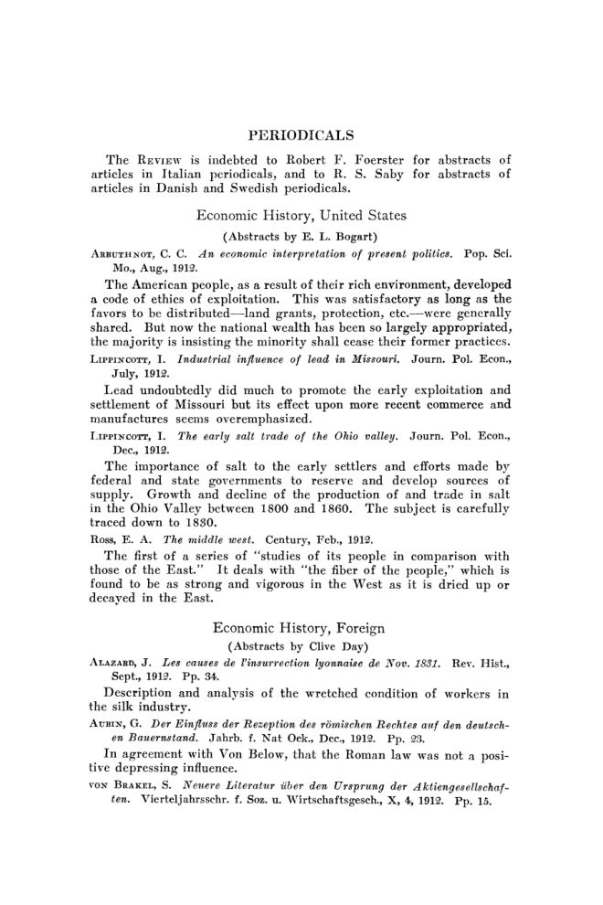

Março de 1913: números-índice, um tribunal e a previsão dos negócios
Leitura: 13 min
Março de 1913: Kinley contesta o dólar estabilizado por números-índice, Dunn defende o Commerce Court, Brookmire testa métodos de previsão e Culbertson relê a Tariff Board sobre a lã.


O número abre com o presidente da casa. David Kinley, da University of Illinois, que a contracapa lista como presidente da American Economic Association, ocupa as 19 primeiras páginas do volume III com uma crítica ao plano de Irving Fisher para estabilizar o poder de compra do dólar. O próprio Fisher aparece mais adiante, na seção de documentos, com os cálculos preliminares da sua equação de trocas para 1912.
É o primeiro número do terceiro ano da revista, editada por Davis R. Dewey com um conselho de seis editores. Além de Kinley, traz três artigos: Samuel O. Dunn sobre o futuro do Commerce Court, o tribunal criado pela lei Mann-Elkins para rever as ordens da Interstate Commerce Commission; James H. Brookmire sobre métodos de previsão dos negócios; e William S. Culbertson sobre o que o relatório da Tariff Board permitia concluir a respeito da tarifa da lã. A edição termina com a correspondência entre o professor Willard C. Fisher e o presidente da Wesleyan University, que levou à renúncia do professor. No meio, resenhas, listas de livros novos, documentos, resumos de periódicos e notas.
Um dólar de poder de compra fixo curaria a carestia?
David Kinley (University of Illinois) · “Objections to a Monetary Standard Based on Index Numbers” · pp. 1–19
Kinley parte da carestia. O público acompanha há algum tempo a alta contínua dos preços, e a proposta recente mais notável para enfrentá-la é a de Irving Fisher: cobrar senhoriagem sobre a cunhagem do ouro, em montante fixado por números-índice, para manter estável o valor da moeda. Para Kinley, é uma forma indireta do padrão tabular, o pagamento de dívidas corrigido pela média dos preços, e herda os defeitos dele. O artigo, diz o autor, é essencialmente uma crítica desse método.
O primeiro argumento é conceitual. Os preços mudam pelo lado da moeda e pelo lado dos bens. Um padrão justo corrigiria só as variações originadas na oferta de moeda; todo plano baseado na média de preços corrige as duas. E as variações do lado dos bens, sustenta Kinley, devem ter livre curso numa economia competitiva, porque são justamente o que a unidade monetária existe para medir. O produtor que reduz custos e vê o ganho anulado por uma mudança na oferta de moeda perde o motivo para reduzi-los.
O segundo argumento é distributivo. A carne encarecia porque havia menos gado: em Illinois, por exemplo, os fazendeiros trocavam a pecuária pela lavoura havia uma década ou mais. Nenhuma restauração do nível de preços aumenta a oferta de carne. A moeda nova, além disso, chega primeiro a quem já é economicamente forte e se difunde, como notara Cairnes, aos solavancos. O terceiro argumento é técnico. Kinley não aceita a hipótese de Fisher de que o crédito guarda relação constante com a moeda; o volume de crédito sobre uma mesma base de ouro é elástico e pode anular a manipulação da moeda.
“O que precisamos é de um esquema de ação antecipatória.” (“What we need is a scheme of anticipatory action”)
Kinley elogia a engenhosidade do plano, que julga praticável em certas condições, mas não o vê como remédio adequado. Prefere outras frentes: conservação dos recursos e aumento da produção, regulação das combinações, distribuição mais barata, salários mínimos fixados por comissões, ação sindical e arbitragem, reservas bancárias maiores e regulação do crédito.
O Commerce Court merecia ser abolido?
Samuel O. Dunn (Chicago) · “The Commerce Court Question” · pp. 20–42
Dunn trata de uma decisão pendente. Na sessão anterior, o Congresso aprovara, como emenda a uma lei de dotações, a abolição do Commerce Court e a transferência de suas funções aos tribunais distritais. Taft vetou, e a lei final só financiou o tribunal até 4 de março de 1913. O tribunal, em funcionamento desde 8 de fevereiro de 1911, julgava recursos contra ordens da Interstate Commerce Commission, a comissão federal que regulava as ferrovias. Dunn propõe reexaminar a questão pelo mérito.
O ambiente, segundo ele, condenou o tribunal desde cedo. Nas primeiras decisões, contrariou repetidamente a comissão e deu ganho de causa às ferrovias, e o relatório anual da comissão para 1911 o atacou. Dunn registra que as ferrovias nada fizeram para defendê-lo, enquanto advogados de embarcadores e a National Industrial Traffic League se opuseram à abolição.
Os argumentos de cada lado eram simétricos: rapidez, uniformidade e especialização a favor; custo, demora, desnecessidade de perícia e parcialidade contra. Dunn examina um a um. O custo anual ficava abaixo de US$ 100 mil, e os juízes, vitalícios, continuariam recebendo como juízes de circuito. Os casos de injunção levavam em média nove meses e meio nos antigos tribunais de circuito e seis no Commerce Court. E oitenta e seis tribunais distritais dificilmente interpretariam a lei de modo uniforme.
Nos casos com ferrovias a vapor, o tribunal decidira 46% a favor delas e 54% contra. A conclusão de Dunn é que a abolição não se justificava pelos motivos alegados. Ele admite um excesso: ao aceitar recursos de embarcadores contra a comissão, o tribunal assumira jurisdição maior que a da lei. E pondera o projeto de tornar a comissão juíza final dos fatos. Ela acumula a função de julgar as ferrovias e a de investigá-las e processá-las, e o juiz Prouty, até pouco antes presidente da comissão, duvidara em 1907 de que um mesmo órgão pudesse exercer bem as duas. Uma nota final registra decisão da Suprema Corte no caso da Louisville and Nashville que confirmava os limites aos poderes da comissão descritos no artigo.
Um gráfico pode prever os negócios?
James H. Brookmire (St. Louis) · “Methods of Business Forecasting Based on Fundamental Statistics” · pp. 43–58
Brookmire parte de uma afirmação prática: o homem de negócios prospera ou fracassa conforme sua capacidade de prever as influências gerais sobre a oferta e a procura. Ele examina quatro tentativas de previsão: as de Stanley Jevons e de Samuel Benner, fazendeiro de Ohio, publicadas cerca de trinta anos antes; a de Roger W. Babson, de Massachusetts; e a de Irving Fisher. Divide-as em duas famílias, as que deixam o gráfico prever sozinho e as que usam o gráfico como base para o julgamento, e postula que nenhum método é eficiente se não considerar safras, política e crédito bancário.
Jevons ligava as crises comerciais aos ciclos de manchas solares, por meio das colheitas tropicais e das exportações inglesas para a Índia; Brookmire nota que a astronomia ainda não sustentava a hipótese. Benner previa ciclos do preço do ferro-gusa por uma “regra de ferro fundido”; seu diagrama apontava pânicos em 1891 e 1911, e eles vieram em 1893 e 1907. Babson desenha áreas de prosperidade e depressão em torno de uma linha de crescimento normal e supõe que as áreas se igualem; como a linha precisa ser revista sempre, o gráfico vira retrato do passado. Fisher usa a velocidade de circulação dos cheques, mas sobre estimativas interpoladas.
A proposta do autor é um “gráfico composto dos fundamentos” com três curvas. A de negócios reúne compensações bancárias, receitas ferroviárias, produção e preço do ferro-gusa, preços das mercadorias, importações, construção e imigração. A bancária usa reservas, depósitos, a taxa do papel comercial e as proporções entre empréstimos, depósitos e reservas. A terceira acompanha trinta e duas ações líderes. Cada fator é testado em separado e livrado da variação sazonal e do crescimento normal antes de entrar na média.
A leitura é sequencial. A bolsa sobe três ou quatro meses antes da melhora; a queda da curva bancária avisa o fim da prosperidade, quando as reservas chegam ao mínimo legal e os bancos chamam os empréstimos. O previsor, conclui Brookmire, trabalha como o meteorologista: parte das condições existentes e corrige a previsão quando muda o vento.
Que tarifa da lã cabia nos números da Tariff Board?
William S. Culbertson (Washington, D. C.) · “The Tariff Board and Wool Legislation” · pp. 59–84
Na segunda sessão do 62º Congresso, seis projetos de revisão do Schedule K, a parte da tarifa que trata da lã e dos lanifícios, foram apresentados no Senado e na Câmara, e todos se diziam apoiados no relatório da Tariff Board. Culbertson pergunta por que a junta não recomendou alíquotas e responde que ela nunca foi pensada para isso. Fixar tarifas exige antes uma escolha política, entre tarifa para receita e proteção, que cabe ao eleitorado, e uma escolha econômica sobre que partes de cada indústria preservar.
A criação de ovinos ilustra a segunda. Havia três ramos: os merinos de lã fina de Ohio e estados vizinhos, que não sobreviveriam sem as tarifas atuais; os rebanhos mestiços, que existiriam mesmo com lã livre; e os rebanhos dos ranchos do Oeste, cuja necessidade de proteção estava em debate. A saída que Culbertson sugere é o Congresso fixar as premissas e pedir à junta as alíquotas correspondentes. O artigo faz o exercício com uma delas: tarifa igual à diferença de custo de produção, mantida a situação das indústrias.
O autor estende o cálculo aos fios e tecidos e compara os projetos. Para ele, as tarifas do projeto Hill, que teve o apoio unânime da minoria republicana na Câmara, estavam substancialmente de acordo com os achados da junta, e as do projeto Penrose eram excessivas. Entre os projetos com tarifas ad valorem, a combinação de La Follette, 35% sobre a lã crua e 55% sobre o tecido, também estava de acordo; as do projeto Underwood e do projeto de compromisso ficavam baixas demais.
“Sem julgamento, as estatísticas são inúteis; sem estatísticas, o julgamento não é confiável.” (“Without judgment, statistics are useless; without statistics, judgment is unreliable.”)
A frase, que Culbertson toma de Henry C. Emery, resume a conclusão: o debate deveria ser sobre premissas, e não sobre resultados. O artigo termina defendendo o trabalho da junta, que, a seu ver, fez mais por uma revisão científica do que todas as audiências de comissões anteriores, e prevê para breve uma comissão tarifária permanente.
Por que um professor de economia deixou a Wesleyan?
Willard C. Fisher e William Arnold Shanklin (Wesleyan University) · “Correspondence Between Professor Willard C. Fisher and President Shanklin” · pp. 255–258
A edição fecha com quatro cartas datadas de 27 de janeiro de 1913, em Middletown, Connecticut, publicadas sem comentário. Na primeira, o presidente da Wesleyan University, William Arnold Shanklin, pergunta a Willard C. Fisher, professor de economia e ciência social, se a imprensa reproduzira corretamente as observações sobre as igrejas atribuídas a ele num discurso recente em Hartford.
Fisher responde que o relato de sua fala no Get Together Club fora substancialmente enganoso, por omissões, por palavras que não eram suas e por manchetes que transformaram observações incidentais em tema principal. Admite, porém, um fundo de verdade. Não dissera que “abriria o domingo por completo”, mas defendera grande liberdade na observância do dia, desde que ninguém perturbasse o uso religioso ou outro que os demais dessem a ele. E dissera que talvez fechasse as igrejas temporariamente, como experiência, para que fiéis que tomam a ida à igreja pela maior parte do dever religioso se voltassem a deveres de serviço ao próximo. Anexa a carta de correção que o jornal publicara em 25 de janeiro, com passagens bíblicas sobre justiça e misericórdia.
Na terceira carta, Shanklin diz que, mesmo após a explicação, julga a atitude de Fisher fora de harmonia com o espírito da instituição, que descreve como não sectária, mas em profunda simpatia com as igrejas cristãs, e pede a renúncia. Fisher a apresenta no mesmo dia. Diz não formular juízo sobre o curso correto da faculdade e reconhece que a Wesleyan, com sua história e seu público, não é o lugar para quem pensa como ele e não pode calar o que pensa. Lembra que deu à instituição os vinte melhores anos de sua vida.
“Deixo a faculdade, portanto, sem um traço de má vontade para com qualquer pessoa ligada a ela.” (“I leave the college, therefore, without a trace of ill will toward anybody connected with it.”)
Na última carta, Shanklin o dispensa das funções até que a renúncia seja apresentada ao conselho de curadores e informa que recomendará o pagamento integral do salário do ano letivo.
O que mais há na edição?
Seguem-se 45 resenhas, organizadas por área, com listas de títulos novos; entre elas, a de Simon N. Patten sobre Sociology in its Psychological Aspects, de Charles A. Ellwood, a de H. L. Lutz sobre a Theorie des Geldes und der Umlaufsmittel, de Ludwig von Mises, e a de Francis Lynde Stetson sobre Concentration and Control, de Charles R. Van Hise. Na seção de documentos estão, entre outros, os cálculos preliminares de Irving Fisher para a equação de trocas de 1912, uma nota de A. N. Holcombe sobre a investigação da companhia telefônica de Chicago e outra de A. A. Young sobre a votação do imposto único no Missouri. As notas registram 2.464 sócios em 20 de dezembro de 1912, que, com 251 assinantes, somavam 2.715.
Na minha leitura
Na minha leitura, o número gira em torno de uma mesma desconfiança: a de que um instrumento engenhoso substitua o julgamento. Kinley recusa o dólar corrigido por índice porque a média de preços mistura o que vem da moeda com o que vem dos bens; Brookmire recusa o gráfico que prevê sozinho e pede safras, política e crédito; Culbertson lembra que as estatísticas da Tariff Board não escolhem as premissas da tarifa. Dunn, por outro caminho, discute quem deve julgar os fatos técnicos da regulação. Em todos, a questão é de desenho institucional: que parte da decisão pode ser entregue a uma regra ou a um corpo técnico, e que parte continua sendo escolha.
Glossário
- Padrão tabular
- pagamento de dívidas em quantia de moeda corrigida por um índice de preços, para preservar o poder de compra.
- Senhoriagem
- parcela retida pelo governo na cunhagem; no plano de Fisher, variaria com o índice de preços.
- Número-índice
- média ponderada dos preços de um grupo de mercadorias, expressa em relação a um ano-base.
- Interstate Commerce Commission
- comissão federal americana criada em 1887 para regular as ferrovias e outros transportadores interestaduais.
- Injunção
- ordem judicial que suspende a aplicação de um ato, aqui as ordens da comissão sobre tarifas ferroviárias.
- Schedule K
- parte da tarifa aduaneira americana que fixava os direitos sobre lã, fios e tecidos de lã.
- Quebra (shrinkage)
- perda de peso da lã suja ao ser lavada; determina quanto custa uma libra de lã limpa.
- Velocidade de circulação
- número de vezes por ano que a moeda, ou os depósitos movimentados por cheque, trocam de mãos.
Artigos (4)
- Objections to a Monetary Standard Based on Index Numbers — David Kinley (University of Illinois) (pp. 1–19) · resenha acima · comentário completo · JSTOR
- The Commerce Court Question — Samuel O. Dunn (Chicago) (pp. 20–42) · resenha acima · JSTOR
- Methods of Business Forecasting Based on Fundamental Statistics — James H. Brookmire (St. Louis) (pp. 43–58) · resenha acima · comentário completo · JSTOR
- The Tariff Board and Wool Legislation — William S. Culbertson (Washington, D. C.) (pp. 59–84) · resenha acima · JSTOR
Resenhas (45)
- Charles A. Ellwood, Sociology in its Psychological Aspects — Simon N. Patten (pp. 85–89). Resenha de Simon N. Patten. JSTOR
- Georges Blanchard, Cours d'Économie Politique — Lewis H. Haney (pp. 89–91). Resenha de Lewis H. Haney. JSTOR
- Frank A. Fetter, Source Book in Economics — Don C. Barrett (pp. 91–92). Resenha de Don C. Barrett. JSTOR
- D. H. Macgregor, The Evolution of Industry — Charles H. Hull (pp. 95–96). Resenha de Charles H. Hull. JSTOR
- Edward Alsworth Ross, Changing America — Herbert Croly (pp. 97). Resenha de Herbert Croly. JSTOR
- Arthur D. Innes, England's Industrial Development; Henry Allsopp, An Introduction to English Industrial History — E. P. Cheyney (pp. 97–100). Resenha de E. P. Cheyney. JSTOR
- Margaret F. Moore, Two Select Bibliographies of Mediaeval Historical Study — Clive Day (pp. 100–101). Resenha de Clive Day. JSTOR
- Edgard Depitre, La Toile Peinte en France au XVIIe et au XVIIIe Siècles — G. C. Sellery (pp. 101–103). Resenha de G. C. Sellery. JSTOR
- Joseph Drouet, L'Abbé de Saint-Pierre: l'Homme et l'Oeuvre — O. D. Skelton (pp. 103–104). Resenha de O. D. Skelton. JSTOR
- William E. Rappard, Le Facteur Économique dans l'Avènement de la Démocratie Moderne en Suisse — Clive Day (pp. 104–105). Resenha de Clive Day. JSTOR
- Peter Heinrich Schmidt, Die schweizerischen Industrien im internationalen Konkurrenzkampfe — Simon Litman (pp. 105–106). Resenha de Simon Litman. JSTOR
- Walther Müller, Zur Frage des Ursprungs der mittelalterlichen Zünfte — Clive Day (pp. 107–108). Resenha de Clive Day. JSTOR
- M. Steckelmacher, Randbemerkungen zu Werner Sombarts “Die Juden und das Wirtschaftsleben” — Max J. Kohler (pp. 108–109). Resenha de Max J. Kohler. JSTOR
- Pierre Clerget, Géographie Économique — Edward Van Dyke Robinson (pp. 109–110). Resenha de Edward Van Dyke Robinson. JSTOR
- William Arthur Shelton, The Lakes-to-the-Gulf Deep Waterway — H. E. Hoagland (pp. 115–116). Resenha de H. E. Hoagland. JSTOR
- J. C. Hemmeon, The History of the British Post Office — William H. Price (pp. 116–118). Resenha de William H. Price. JSTOR
- W. A. Robertson, Combination among Railway Companies — Ernest Ritson Dewsnup (pp. 118–119). Resenha de Ernest Ritson Dewsnup. JSTOR
- Edwin A. Pratt, A History of Inland Transport and Communication in England — Ernest Ritson Dewsnup (pp. 119–120). Resenha de Ernest Ritson Dewsnup. JSTOR
- Sereno S. Pratt, The Work of Wall Street — Horace White (pp. 122–124). Resenha de Horace White. JSTOR
- Lawrence Chamberlain, The Principles of Bond Investment; The Work of the Bond House — O. M. W. Sprague (pp. 124–126). Resenha de O. M. W. Sprague. JSTOR
- W. H. Lyon, Capitalization — John F. Moors (pp. 127–128). Resenha de John F. Moors. JSTOR
- Roger W. Babson, Stocks and Bonds — J. F. Moors (pp. 128–129). Resenha de J. F. Moors. JSTOR
- William G. Redfield, The New Industrial Day — Herbert Croly (pp. 129). Resenha de Herbert Croly. JSTOR
- Charles R. Van Hise, Concentration and Control — Francis Lynde Stetson (pp. 131–134). Resenha de Francis Lynde Stetson. JSTOR
- Charles Norman Fay, Big Business and Government — Maurice H. Robinson (pp. 134–135). Resenha de Maurice H. Robinson. JSTOR
- Arthur K. Kuhn, A Comparative Study of the Law of Corporations — Maurice H. Robinson (pp. 135–136). Resenha de Maurice H. Robinson. JSTOR
- George Gorham Groat, Attitude of American Courts in Labor Cases — John R. Commons (pp. 137–139). Resenha de John R. Commons. JSTOR
- Sylvain Humbert, Le Mouvement Syndical — Louis Levine (pp. 139–140). Resenha de Louis Levine. JSTOR
- Ephrem Ricking, Die deutschen Wanderarbeitsstätten — Robert F. Foerster (pp. 140–141). Resenha de Robert F. Foerster. JSTOR
- Report of Commission on the Cost of Living in New Zealand — Warren M. Persons (pp. 143–144). Resenha de Warren M. Persons. JSTOR
- Ludwig von Mises, Theorie des Geldes und der Umlaufsmittel — H. L. Lutz (pp. 144–146). Resenha de H. L. Lutz. JSTOR
- Heinrich Bichmann, Der Zinsfuss seit 1895 — Everett Walton Goodhue (pp. 146–148). Resenha de Everett Walton Goodhue. JSTOR
- Untersuchungen über Preisbildung (Francken, Hertel e Schrader; Brutzer) e outros estudos sobre preços (Eulenburg, Alberti, Rothe) — Henry J. Harris (pp. 148–153). Resenha de Henry J. Harris. JSTOR
- Cephas D. Allin e George M. Jones, Annexation, Preferential Trade and Reciprocity — Henry R. Mussey (pp. 155–156). Resenha de Henry R. Mussey. JSTOR
- Solomon Vineberg, Provincial and Local Taxation in Canada — O. D. Skelton (pp. 156–158). Resenha de O. D. Skelton. JSTOR
- Edwin Cannan, The History of Local Rates in England — E. W. Kemmerer (pp. 158–160). Resenha de E. W. Kemmerer. JSTOR
- Reginald L. Poole, The Exchequer in the Twelfth Century — Sydney Knox Mitchell (pp. 160). Resenha de Sydney Knox Mitchell. JSTOR
- François Sagot, Les Gardes d'Honneur de la Marne, 1813 — William E. Rappard (pp. 161). Resenha de William E. Rappard. JSTOR
- Problems in Eugenics e outros seis livros sobre eugenia e hereditariedade — A. B. Wolfe (pp. 165–170). Resenha de A. B. Wolfe. JSTOR
- Giacomo Barone Russo, L'Emigration et ses Effets dans le Midi de l'Italie — Walter E. Weyl (pp. 170–172). Resenha de Walter E. Weyl. JSTOR
- Howard P. Dunham (ed.), The Business of Insurance — W. F. Gephart (pp. 175–176). Resenha de W. F. Gephart. JSTOR
- Edward V. French, Factory Mutual Insurance — W. F. G. (pp. 176). Resenha de W. F. G.. JSTOR
- Douglas Knoop, Principles and Methods of Municipal Trading — Karl F. Geiser (pp. 178–180). Resenha de Karl F. Geiser. JSTOR
- Roland K. Wilson, J. H. Levy e outros, Individualism and the Land Question; Auberon Herbert e J. H. Levy, Taxation and Anarchism — J. E. LeRossignol (pp. 180–181). Resenha de J. E. LeRossignol. JSTOR
- Franco Savorgnan, La Distribuzione dei Redditi nelle Provincie e nelle Grandi Città dell'Austria — Allyn A. Young (pp. 182–184). Resenha de Allyn A. Young. JSTOR
Novos livros (16)
- New Books (pp. 93–95). Lista de livros recentes da seção de obras gerais, teoria e sua história, com notas breves. JSTOR
- New Books (pp. 110–113). Lista de livros recentes da seção de história econômica e geografia, com notas breves. JSTOR
- New Books (pp. 114). Lista de livros recentes da seção de agricultura, mineração, florestas e pesca, com notas breves. JSTOR
- New Books (pp. 115). Lista de livros recentes da seção de indústrias manufatureiras, com notas breves. JSTOR
- New Books (pp. 120–122). Lista de livros recentes da seção de transportes e comunicações, com notas breves. JSTOR
- New Books (pp. 122). Lista de livros recentes da seção de comércio e crises comerciais, com notas breves. JSTOR
- New Books (pp. 129–131). Lista de livros recentes da seção de contabilidade, métodos de negócios e investimentos, com notas breves. JSTOR
- New Books (pp. 136–137). Lista de livros recentes da seção de capital e organização capitalista, com notas breves. JSTOR
- New Books (pp. 141–143). Lista de livros recentes da seção de trabalho e organizações trabalhistas, com notas breves. JSTOR
- New Books (pp. 153–155). Lista de livros recentes da seção de moeda, preços, crédito e bancos, com notas breves. JSTOR
- New Books (pp. 161–164). Lista de livros recentes da seção de finanças públicas, tributação e tarifas, com notas breves. JSTOR
- New Books (pp. 172–173). Lista de livros recentes da seção de população e migração, com notas breves. JSTOR
- New Books (pp. 173–175). Lista de livros recentes da seção de problemas sociais e reformas, com notas breves. JSTOR
- New Books (pp. 176–178). Lista de livros recentes da seção de seguros e pensões, com notas breves. JSTOR
- New Books (pp. 178). Lista de livros recentes da seção de pauperismo e assistência, com notas breves. JSTOR
- New Books (pp. 184). Lista de livros recentes da seção de estatística e seus métodos, com notas breves. JSTOR
Documentos, periódicos e notas (4)
- Documents, Reports and Legislation (pp. 185–213). Documentos, relatórios e legislação: entre outros, os cálculos preliminares de Irving Fisher para a equação de trocas de 1912, a investigação da companhia telefônica de Chicago, a indenização de acidentes de trabalho e a votação do imposto único no Missouri. JSTOR
- Periodicals (pp. 214–249). Resumos de artigos de periódicos americanos e estrangeiros, organizados por área. JSTOR
- Notes (pp. 250–254). Notas da associação e do meio acadêmico, com a distribuição dos sócios por estado em 20 de dezembro de 1912 e o total de 2.715 sócios e assinantes. JSTOR
- Correspondence Between Professor Willard C. Fisher and President Shanklin — Willard C. Fisher e William Arnold Shanklin (pp. 255–258). Quatro cartas de 27 de janeiro de 1913 entre o presidente da Wesleyan University e o professor Willard C. Fisher, que terminam com a renúncia do professor. JSTOR
Fontes
- Objections to a Monetary Standard based on Index Numbers (pp. 1–19). JSTOR · Internet Archive (PDF)
- The Commerce Court Question (pp. 20–42). JSTOR · Internet Archive (PDF)
- Methods of Business Forecasting based on Fundamental Statistics (pp. 43–58). JSTOR · Internet Archive (PDF)
- The Tariff Board and Wool Legislation (pp. 59–84). JSTOR · Internet Archive (PDF)
- [untitled] The American Economic Review, (1913-03-01), pages 85-89 (pp. 85–89). JSTOR · Internet Archive (PDF)
- [untitled] The American Economic Review, (1913-03-01), pages 89-91 (pp. 89–91). JSTOR · Internet Archive (PDF)
- [untitled] The American Economic Review, (1913-03-01), pages 91-92 (pp. 91–92). JSTOR · Internet Archive (PDF)
- New Books (pp. 93–95). JSTOR · Internet Archive (PDF)
- [untitled] The American Economic Review, (1913-03-01), pages 95-96 (pp. 95–96). JSTOR · Internet Archive (PDF)
- [untitled] The American Economic Review (1913-03-01), page 97 (pp. 97). JSTOR · Internet Archive (PDF)
- [untitled] The American Economic Review, (1913-03-01), pages 97-100 (pp. 97–100). JSTOR · Internet Archive (PDF)
- [untitled] The American Economic Review, (1913-03-01), pages 100-101 (pp. 100–101). JSTOR · Internet Archive (PDF)
- [untitled] The American Economic Review, (1913-03-01), pages 101-103 (pp. 101–103). JSTOR · Internet Archive (PDF)
- [untitled] The American Economic Review, (1913-03-01), pages 103-104 (pp. 103–104). JSTOR · Internet Archive (PDF)
- [untitled] The American Economic Review, (1913-03-01), pages 104-105 (pp. 104–105). JSTOR · Internet Archive (PDF)
- [untitled] The American Economic Review, (1913-03-01), pages 105-106 (pp. 105–106). JSTOR · Internet Archive (PDF)
- [untitled] The American Economic Review, (1913-03-01), pages 107-108 (pp. 107–108). JSTOR · Internet Archive (PDF)
- [untitled] The American Economic Review, (1913-03-01), pages 108-109 (pp. 108–109). JSTOR · Internet Archive (PDF)
- [untitled] The American Economic Review, (1913-03-01), pages 109-110 (pp. 109–110). JSTOR · Internet Archive (PDF)
- New Books (pp. 110–113). JSTOR · Internet Archive (PDF)
- New Books (pp. 114). JSTOR · Internet Archive (PDF)
- New Books (pp. 115). JSTOR · Internet Archive (PDF)
- [untitled] The American Economic Review, (1913-03-01), pages 115-116 (pp. 115–116). JSTOR · Internet Archive (PDF)
- [untitled] The American Economic Review, (1913-03-01), pages 116-118 (pp. 116–118). JSTOR · Internet Archive (PDF)
- [untitled] The American Economic Review, (1913-03-01), pages 118-119 (pp. 118–119). JSTOR · Internet Archive (PDF)
- [untitled] The American Economic Review, (1913-03-01), pages 119-120 (pp. 119–120). JSTOR · Internet Archive (PDF)
- New Books (pp. 120–122). JSTOR · Internet Archive (PDF)
- New Books (pp. 122). JSTOR · Internet Archive (PDF)
- [untitled] The American Economic Review, (1913-03-01), pages 122-124 (pp. 122–124). JSTOR · Internet Archive (PDF)
- [untitled] The American Economic Review, (1913-03-01), pages 124-126 (pp. 124–126). JSTOR · Internet Archive (PDF)
- [untitled] The American Economic Review, (1913-03-01), pages 127-128 (pp. 127–128). JSTOR · Internet Archive (PDF)
- [untitled] The American Economic Review, (1913-03-01), pages 128-129 (pp. 128–129). JSTOR · Internet Archive (PDF)
- [untitled] The American Economic Review (1913-03-01), page 129 (pp. 129). JSTOR · Internet Archive (PDF)
- New Books (pp. 129–131). JSTOR · Internet Archive (PDF)
- [untitled] The American Economic Review, (1913-03-01), pages 131-134 (pp. 131–134). JSTOR · Internet Archive (PDF)
- [untitled] The American Economic Review, (1913-03-01), pages 134-135 (pp. 134–135). JSTOR · Internet Archive (PDF)
- [untitled] The American Economic Review, (1913-03-01), pages 135-136 (pp. 135–136). JSTOR · Internet Archive (PDF)
- New Books (pp. 136–137). JSTOR · Internet Archive (PDF)
- [untitled] The American Economic Review, (1913-03-01), pages 137-139 (pp. 137–139). JSTOR · Internet Archive (PDF)
- [untitled] The American Economic Review, (1913-03-01), pages 139-140 (pp. 139–140). JSTOR · Internet Archive (PDF)
- [untitled] The American Economic Review, (1913-03-01), pages 140-141 (pp. 140–141). JSTOR · Internet Archive (PDF)
- New Books (pp. 141–143). JSTOR · Internet Archive (PDF)
- [untitled] The American Economic Review, (1913-03-01), pages 143-144 (pp. 143–144). JSTOR · Internet Archive (PDF)
- [untitled] The American Economic Review, (1913-03-01), pages 144-146 (pp. 144–146). JSTOR · Internet Archive (PDF)
- [untitled] The American Economic Review, (1913-03-01), pages 146-148 (pp. 146–148). JSTOR · Internet Archive (PDF)
- [untitled] The American Economic Review, (1913-03-01), pages 148-153 (pp. 148–153). JSTOR · Internet Archive (PDF)
- New Books (pp. 153–155). JSTOR · Internet Archive (PDF)
- [untitled] The American Economic Review, (1913-03-01), pages 155-156 (pp. 155–156). JSTOR · Internet Archive (PDF)
- [untitled] The American Economic Review, (1913-03-01), pages 156-158 (pp. 156–158). JSTOR · Internet Archive (PDF)
- [untitled] The American Economic Review, (1913-03-01), pages 158-160 (pp. 158–160). JSTOR · Internet Archive (PDF)
- [untitled] The American Economic Review (1913-03-01), page 160 (pp. 160). JSTOR · Internet Archive (PDF)
- [untitled] The American Economic Review (1913-03-01), page 161 (pp. 161). JSTOR · Internet Archive (PDF)
- New Books (pp. 161–164). JSTOR · Internet Archive (PDF)
- [untitled] The American Economic Review, (1913-03-01), pages 165-170 (pp. 165–170). JSTOR · Internet Archive (PDF)
- [untitled] The American Economic Review, (1913-03-01), pages 170-172 (pp. 170–172). JSTOR · Internet Archive (PDF)
- New Books (pp. 172–173). JSTOR · Internet Archive (PDF)
- New Books (pp. 173–175). JSTOR · Internet Archive (PDF)
- [untitled] The American Economic Review, (1913-03-01), pages 175-176 (pp. 175–176). JSTOR · Internet Archive (PDF)
- [untitled] The American Economic Review (1913-03-01), page 176 (pp. 176). JSTOR · Internet Archive (PDF)
- New Books (pp. 176–178). JSTOR · Internet Archive (PDF)
- New Books (pp. 178). JSTOR · Internet Archive (PDF)
- [untitled] The American Economic Review, (1913-03-01), pages 178-180 (pp. 178–180). JSTOR · Internet Archive (PDF)
- [untitled] The American Economic Review, (1913-03-01), pages 180-181 (pp. 180–181). JSTOR · Internet Archive (PDF)
- [untitled] The American Economic Review, (1913-03-01), pages 182-184 (pp. 182–184). JSTOR · Internet Archive (PDF)
- New Books (pp. 184). JSTOR · Internet Archive (PDF)
- Documents, Reports and Legislation (pp. 185–213). JSTOR · Internet Archive (PDF)
- Periodicals (pp. 214–249). JSTOR · Internet Archive (PDF)
- Notes (pp. 250–254). JSTOR · Internet Archive (PDF)
- Correspondence Between Professor Willard C. Fisher and President Shanklin. (pp. 255–258). JSTOR · Internet Archive (PDF)
- Sumário da edição no JSTOR: The American Economic Review, vol. 3, nº 1.
Documento em domínio público (EUA, publicado antes de 1931), via JSTOR Early Journal Content e Internet Archive. Resumo e comentário do autor deste site, sem afiliação com a American Economic Association. Encontrou um erro? Escreva: a correção é publicada no próprio texto, com data.
← Nº 121 · Dezembro de 1912: o que é preço, de onde vêm os juros Nº 123 · Boston, 1912: população, dólar padronizado e os limites da regulação →